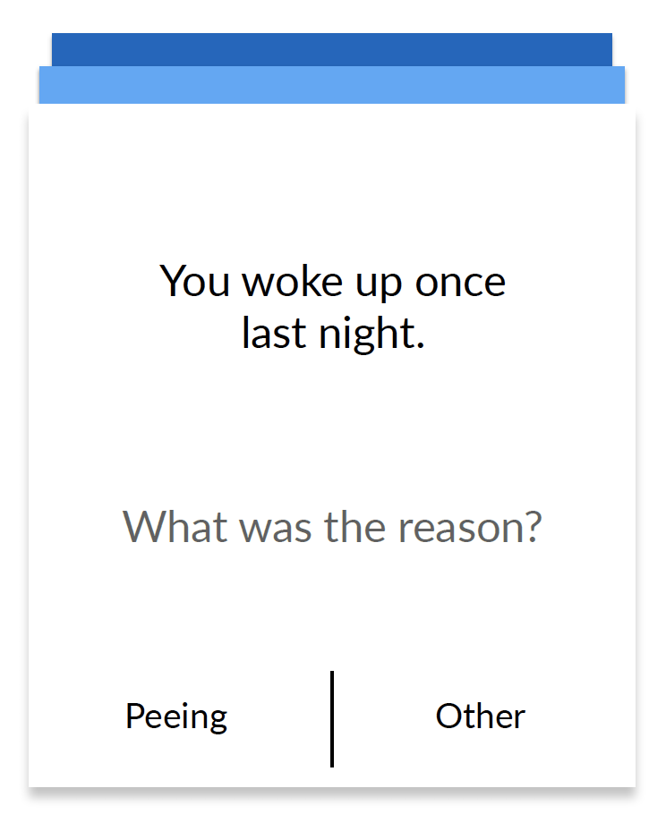

WAKE - Redesigning the waking up experience
Design a system that will give the person a good night’s sleep and help him/her wake up refreshed.
The Project
Wake was a research led design project undertaken at the Monsoon Course in Human Computer Interaction at the Industrial Design Centre(IDC) at IIT Bombay, Powai in 2016.
The Users
As a part of the research, 22 users from different age groups were interviewed to understand how the problem impacts the users.
My Role
User reserach, 4 User interviews out of 22, Wireframing and User testing.
Team
Team of six people
Duration
Exploring The Problem Space
Understanding the context and impact of sleep.
During normal sleep, humans cycle through Rapid Eye Movements (REM) and four stages of non-REM (NREM) sleep numerous times a night. When one is repeatedly interrupted and can't cycle normally through these types and stages of sleep, humans may feel tired, fatigued, and have trouble concentrating and paying attention while being awake. [1] When someone is suddenly forced to wake up they have higher blood pressure and heart rate than those allowed to wake up in their own time. [2] Researchers have found that, over the past decade, people have been going to bed later but still getting up at the same time, losing about 40 minutes of sleep on workdays. [3]
As we can see that sleep not only impacts productivity but has health implications too.
User Research
User Interviews
We interviewed a total of 22 users.
5
Students
12
Working Professionals
5
Homemakers
A few findings from the interviews
"I didn't even realize that that my Apple Watch helps me wake up on time"
Where the user keeps his waking up device (alarm, phone) has emerged as a big factor in deciding the waking up experience.
People who have a certain goal in the morning, they wake up fresh to achieve that and they are on the constant lookout for incentives and motivation to wake up.
People are able to successfully lie to themselves about sleeping for 5 more minutes always and regret it later.
Research Synthesis
Insights from Contextual Enquiry
The Routine-Sleep Cycle is a vicious circle
A disturbance in the routine disturbs the sleep cycle which then again disturbs the routine in a never-ending circle
People have their own perceived sleeping quota and pre-sleep rituals
From music to reading to Instagram, everyone has their own idea of unwinding and their own idea of sufficient sleep hours.
People percieve alarms differently
People's perception and reaction of alarms is different. Some hate alarms, some get used to them and it stops working for them and for some it has little or no effect.
People have their own reasons for waking up
Some had positive, others had not so positive reasons. The reasons ranged from motivation to compulsion to the belief that mornings are super-productive.
User Persona
Key User Requirements
Disturbance to the sleep cycle should be minimised.
Meeting the perceived sleep quota and pre-sleep unwinding.
Alarms should be less intrusive and more effective.
Waking up fresh so that the goals of the day are met.
How should we respond?
Ideation and Solutions
Solution Space
Wake Band - How should the product be designed?
Wake App
VR Awake
This is a 360° scene exploration of what the user will see after waking up.
Testing and Evaluation
Key questions the Usability Tests should answer
Adoption
For alarm users who don’t use an additional accessory while sleeping, are they hesitant to adopt a sleep mask? Is it the same for users who are already using a device like Fitbit?
Sustainability
For both kind of users, ones who have used a sleep mask before and ones who have never, how is the con?nued use? Why and when do people stop using it?
Impact
When do the users start feeling the benefits of the new addition in their lives? Has their sleeping pattern improved? Are they waking up fresh?
How do we test all of these in a non-intrusive manner?
The Pittsburgh Sleep Quality Index (PSQI) is a self-report questionaire that assesses sleep quality period of 1-month.
19 Questions
7 component scores
Subjective sleep quality. Sleep latency. Sleep duration. Habitual sleep efficiency. Sleep disturbances. Use of sleeping medication. Daytime dysfunction.
Improving the realiability of Pittsburgh Sleep Quality Index (PSQI)
10 out of 19 questions can be answered by sensors available today.
Asking the other 9 questions everyday or every alternate day is better than asking at the end of the month.
Designing the Usability Tests
Testing the improvement in sleep quality using the sleep mask over a period of time
Testing the usability of the App and the VR Experience
Prototype Specifications
Prototype is equipped with pressure and heat-flow sensors along the surface to determine the magnitude and distribution of contact pressure, throughout the sleep cycle, and heat flow into the mask. Moisture sensors for testing the moisture transport between different layers of the fabric.
Other sensors to measure biological signals:
Brain waves (EEG - electroencephalography),
Muscle tension (EMG - electromyography), and
Eye movements (EOG - electrooculography)
All of these sensors are available in embeddable format today.
Longitudinal Usability Test (Sleep Quality)
Number of Users
25 users
Duration
4 weeks
Hardware/Software
Wake Mask and Companion App.
The companion app is modified to enable the testers to log meals and other details before sleep and after waking up.
User Tasks
Before Sleep
Log your meals in the companion app
Log the medicines taken during the day in the app
Set the morning alarm for the desired ?me to wake up
During Sleep
Comfort (using Contact Pressure, thermal and moisture sensors)
Time to Fall Asleep and Waking up Time
Forehead/Eye Muscle Tension over-night
Brain Activity and REM phases
Body Temperature, Snoring, Coughing during sleep
After Sleep
Open the companion app after 15 minutes
Play the Wake Up Swipe game
Wake Up Swipe Game
The swipe game for testers is a low cognitive load game which presents 5 simple questions with two options each. These options are designed to answer unanswered questions from the PSQI questionaire or to measure the mindfulness, alertness, decisiveness and mood of the user in the morning.
Using the before, during and after sleep activities reported daily by the user and the device the Pittsburg Sleep Quality Index questionnaire can be automatically filled and scored.
A comparison of these scores over 2 weeks will tell us whether user’s sleep quality is improving and by what measure.
Reflection
Reflections
With the progress of technology, there are currently flexible displays available in the market and thus we are on the road towards the technological feasability of the solution. This being my first design project, I have learned about valuable insights on how the design process works.
If I were to do this project again, I would take more time on the actual prototyping and user testing via the Wizard of Oz method to further test our solution.